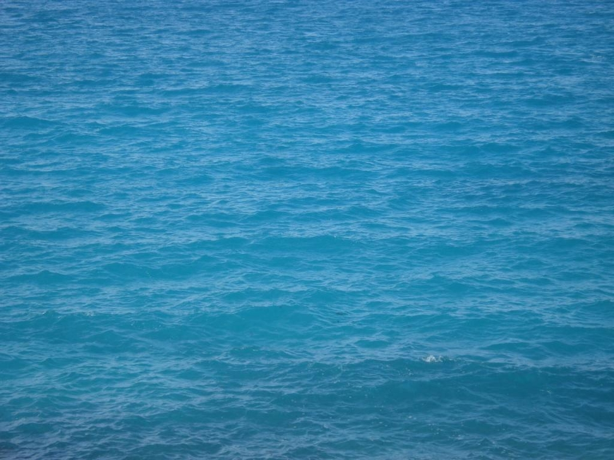

border-radius თვისება საშუალებას გაძლევთ ელემენტს მომრგვალებული კუთხეები დაამატოთ.
მომრგვალებული კუთხეები ფონის მქონე ელემენტებისთვის:
მართკუთხედი მომრგვალებული კუთხეებით
მომრგვალებული კუთხეები ჩარჩოიანი ელემენტებისთვის:
მართკუთხედი მომრგვალებული კუთხეებით
მომრგვალებული კუთხეები ფონურგამოსახულებიანი ელემენტებისთვის:

მართკუთხედი მომრგვალებული კუთხეებით